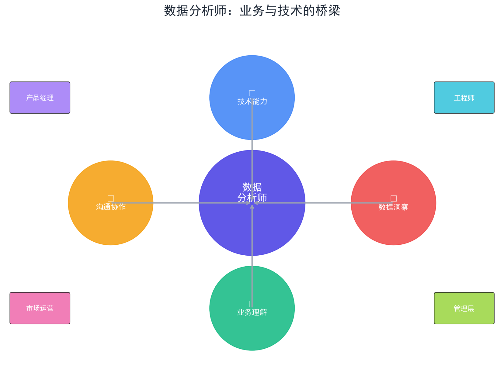
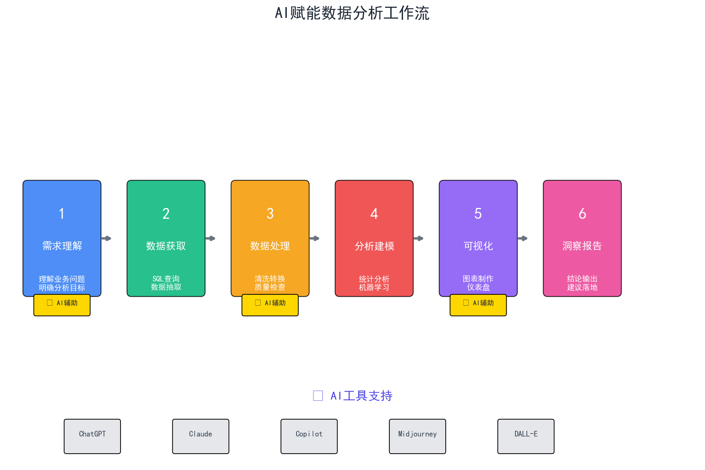
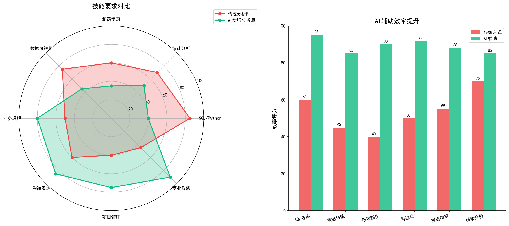
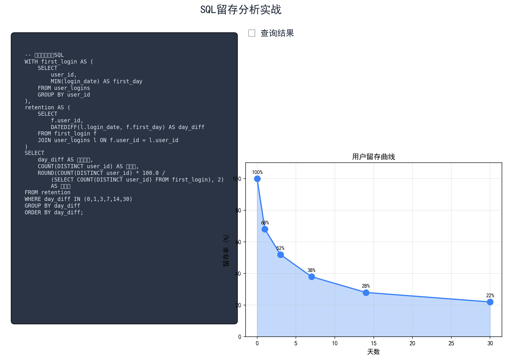
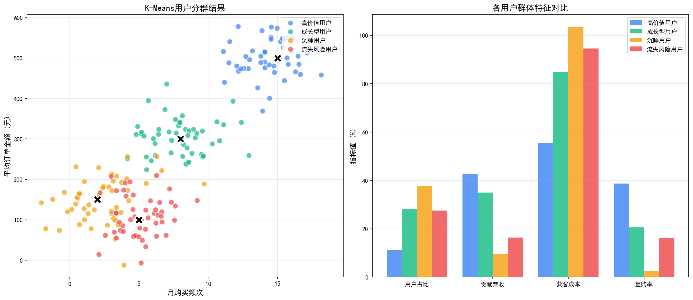
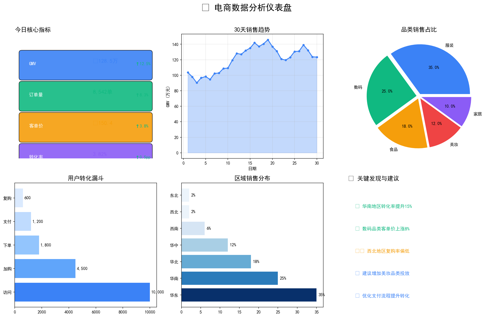
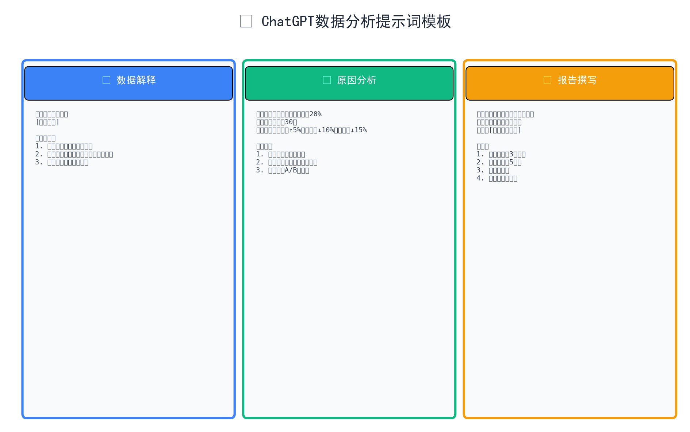
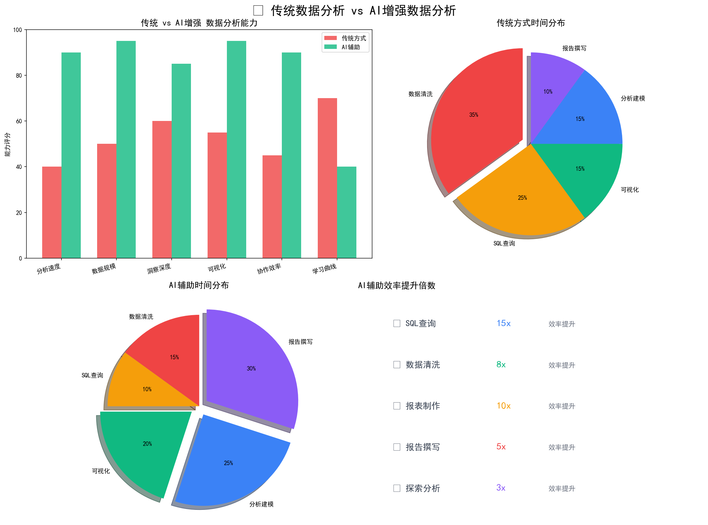
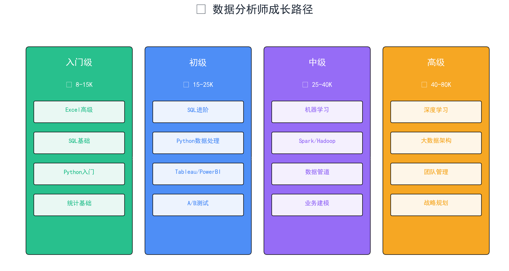

本课程注重理论与实践结合，建议边学边练，结合实际数据进行练习。
数据分析师是业务与技术之间的桥梁，需要将海量数据转化为业务洞察， 驱动企业决策。AI时代，数据分析师的角色更加重要，但工作方式发生了根本性变化。
连接业务需求与数据价值的关键枢纽

技术门槛降低，业务洞察和沟通能力变得更加重要！

SQL生成 15倍 | 数据清洗 8倍 | 报告撰写 5倍


急剧下降期 → 平稳期 → 持续流失期

欧氏距离：d = √(x₁-x₂)² + (y₁-y₂)²

请分析以下数据，找出主要特征和异常点...
背景：转化率下降20%，请分析可能原因...
角色：资深分析师，撰写月度分析报告...

先让AI给出框架，再逐步深入具体内容

数据清洗 35% | SQL查询 25%
可视化 15% | 分析建模 15% | 报告 10%
数据清洗 15% | SQL查询 10%
可视化 20% | 分析建模 25% | 报告 30%

每周花2小时学习一个新工具或方法
使用SQL分析任意数据集的留存情况，包括：
使用Python对用户进行聚类分群：
AI时代，数据分析师如何保持竞争力？